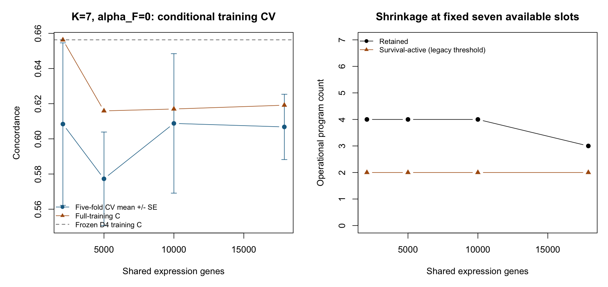
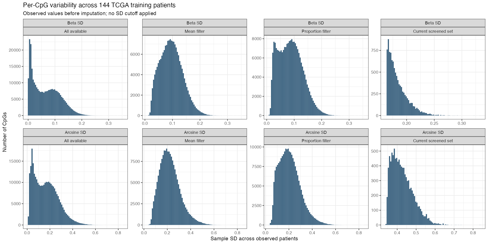

12 October 16, 2026
12.1 Executive summary
The project write-up brings together the Bayesian molecular-program model, simulation and cross-cohort prediction results, feature sensitivity, and biological interpretation in pancreatic cancer. Its central question is whether molecular programs can distinguish tumor and microenvironmental signals while providing useful survival prediction.
- Method and prediction. Empirical-Bayes factorization estimates patient activities and molecular loadings; projection scores support prediction in new patients. The evaluated single-block model achieves mean external concordance 0.627 across five cohorts (616 patients), versus 0.601 for the independently tuned factorization-then-Cox comparator.
- Biological interpretation. Four retained expression programs separate basal-like/classical tumor signals from stromal/immune structure. These annotations provide a basis for the manuscript narrative; their biological interpretation remains provisional. The joint expression–methylation model adds molecular structure, but added predictive or biological value from methylation is not yet established.
- Progress since October 2. All 24 gene-count fits converged through 17,900 genes, with broadly similar conditional CV performance and especially strong program agreement between 5,001 and 10,000 genes. The full CpG variability inventory and requested filter summaries are complete.
- Methodological progress and remaining limitation. Stable log-space Cox arithmetic removes the original 25k-CpG numerical failure. A separate prior-consistency repair improves local prior updates, but fitted outputs remain unsettled when its stopping rule triggers. Neither establishes a validated supervised replacement: the retained Single benchmark still uses \(\alpha_F=0\), and reliable survival-guided loading discovery remains the immediate methodological priority.
12.2 Progress since October 2
The feature studies now cover the full shared-gene universe and the requested CpG variability inventory. More genes give similar conditional prediction performance, but the programs change. CpG fitting exposed a numerical failure that is repaired experimentally; convergence remains unresolved.
The benchmark is retained: Single external C=0.627 with \(\alpha_F=0\) (survival does not guide its loading updates). The joint benchmark has ICGC primary C=0.685 versus C=0.676 for the expression-only framework on the same donors; both fits are unconverged. No fully validated survival-supervised replacement or incremental predictive benefit from methylation has been established.
12.3 Increasing the number of genes
We fitted nested gene sets on the same 273 TCGA+CPTAC training patients, using the Single benchmark settings, \(K=7\), no pruning and cold starts. All 24 full-training/CV fits converged, through all 17,900 shared genes. The nominal 5,000 target gives 5,001 shared genes under the unchanged ranking.
| Shared genes | Training C | Mean conditional CV C ± SE | Retained programs |
|---|---|---|---|
| 2,064 | 0.656 | 0.608 ± 0.046 | 4 |
| 5,001 | 0.616 | 0.577 ± 0.027 | 4 |
| 10,000 | 0.617 | 0.609 ± 0.040 | 4 |
| 17,900 | 0.619 | 0.607 ± 0.019 | 3 |

Prediction stays similar across the full range: conditional CV C is about 0.608 at 2,064 genes, 0.609 at 10,000 and 0.607 with all 17,900. The uncertainty intervals overlap; no new feature count was selected.
Program agreement depends on which counts are compared. The expansion from 5,001 to 10,000 genes is highly consistent. Agreement is less uniform when moving from the small screened set or to all shared genes:
| Gene-count comparison | Matched nonconstant programs | Common-gene loading ( | r |
|---|---|---|---|
| 2,064 → 5,001 | 4 | 0.115–0.962 | 0.655 |
| 5,001 → 10,000 | 4 | 0.960–0.994 | 0.972 |
| 10,000 → 17,900 | 3 | 0.737–0.915 | 0.667 |
These are matched programs, not all seven starting columns; constant or unmatched programs have no defined correlation. Similar prediction can coexist with changes in individual programs. Screening/scaling preceded the folds, so this is conditional CV rather than a fully nested preprocessing evaluation. No new external scoring was used.
12.4 Increasing the number of CpGs
The observed-value mean/SD inventory covers 305,492 raw probes in 144 TCGA patients. The unchanged model-eligible universe contains 305,352; its imputation exactly reproduces the frozen 10k matrix. Within that universe, the mean-in-[0.1,0.9] rule retains 182,934 probes and the 95%-extreme-proportion rule retains 221,142. These are descriptive alternatives; no filter or SD cutoff has been adopted, and upstream probe-QC completeness remains unverified.

| Methylation-only fit | Training C | Credible programs | Outcome |
|---|---|---|---|
| 10,000 CpGs, original arithmetic | 0.613 | 0 | Capped at 500 |
| 25,000 CpGs, original arithmetic | Unavailable | Unavailable | Cox risk-set underflow |
| Same 25,000, stable log-space arithmetic | 0.984 | 7 | Capped at 500; extreme predictors |
Stable arithmetic fixes the execution error without changing the likelihood; it does not fix the fit. The 25k risk SD reaches about 39,086, and risk and reconstruction still move beyond the original tolerance. Its high training C is not a validated gain. Four matched programs have common-probe loading correlation above 0.92, while three are weakly matched; risk correlation is 0.245. Both fits cap and arithmetic differs, so this is provisional agreement, not a clean converged feature-count comparison. Larger counts, CV, filter comparisons and joint curves remain open.
12.5 Meeting plan: what remains
| October 2 item | Current status |
|---|---|
| Unified write-up | Interim report delivered; final method/biology revisions remain open |
| Gene-count sensitivity | Single training/CV curve complete; matched TCGA framework expression-only curve remains open |
| CpG variability and feature counts | Inventory/histograms complete; count fits partial and unstable |
| Survival-supervised programs | Experimental updates implemented; original adoption gates still fail |
| Rank selection and large-p simulation | Pruning remedies not adopted; added-noise large-p study unrun |
| Multimodal contribution | Matched prediction and reproducible added biology still need validation |
Next priorities: establish stable survival-supervised fitting, then complete the matched expression-only, methylation-only and joint feature curves. Retained programs must be justified by reproducible molecular and prognostic roles; fewer programs alone are not evidence of a better model.
An initial prior-consistency repair improves local prior updates, but its fitted outputs still move beyond the existing stability diagnostic when the stopping rule triggers. No new supervised configuration is adopted.